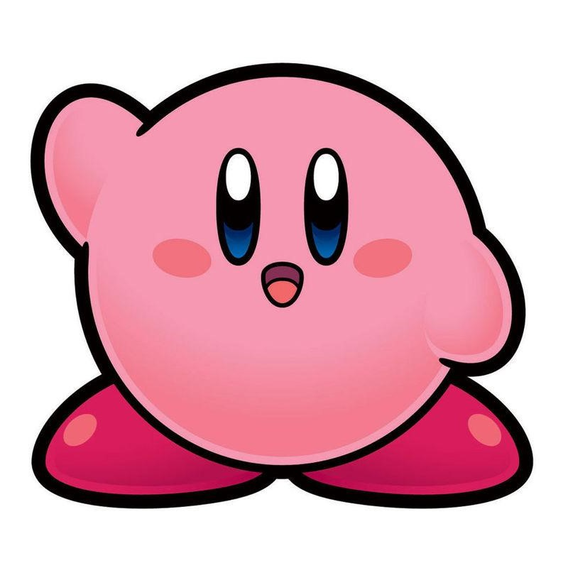
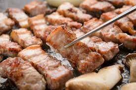
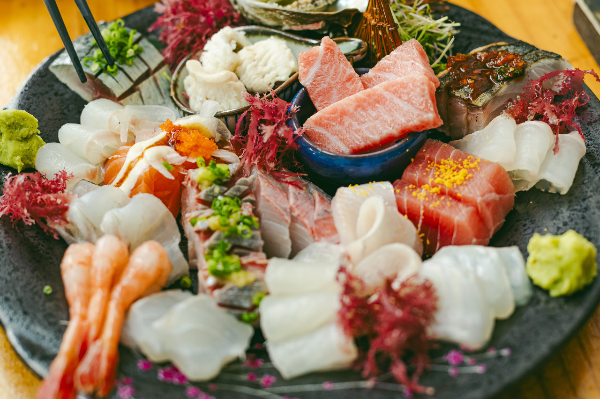
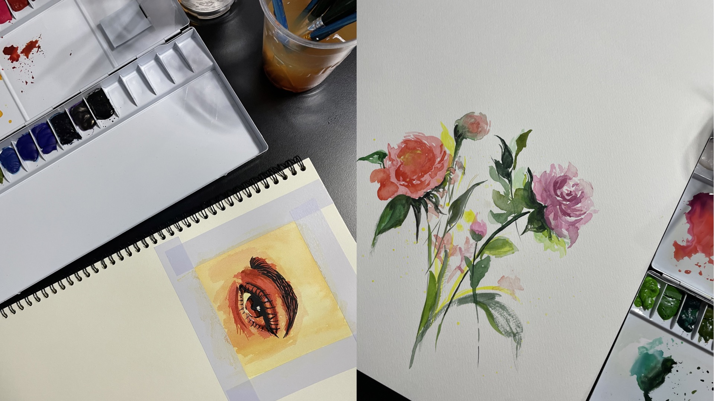

제 이름은 심지수입니다.
MBTI: ENTJ(지휘관, 통솔자)
태어난 곳


제가 태어난 곳은 전주입니다. 전라북도에 위치한 도시이며 음식으로 유명한 지역입니다.
성인이 되고 나서 대학교 진학으로 인해 수원으로 이사를 오게 되었습니다.
가보고 싶은 곳 / 가봤던 곳
<가보고 싶은 곳>


제가 가보고 싶은 곳은 스위스입니다.
중부 유럽에 위치한 국가이며 연상되는 이미지로는 알프스 산맥이 있습니다.
스위스는 대한민국과 비슷하게 산이 많은 지역입니다. 만년설과 빙하가 있는 산의 자연경관을 보고 싶습니다.
<가봤던 곳>
가봤던 곳 중 기억에 남는 곳을 꼽자면
좋아하는 음식
 저는 가리는 음식이 없어 호불호가 갈릴만한 향신료와 허브도 좋아합니다.
음식 중에서 가장 좋아하는 것을 꼽자면 고기와 회입니다.
내가 좋아하는 것 (취미)
<요리하기>
제가 좋아하는 취미 중 하나는 요리입니다. 어렸을때부터 요리하는걸 좋아했습니다.
김치와 피클, 과일청 등은 수월하게 만드는 편이며 한식뿐만 아니라 다양한 나라의 요리를 만들고 즐깁니다.
최근에 들어서는 제빵도 연습하고 있습니다.
<뜨개질하기>
제가 좋아하는 취미 중 하나는 뜨개질입니다.
가방이나 에어팟 케이스 등 직접 만들어 사용합니다.
뜨개질을 하면 잡생각이 줄어들고 이것에 집중하게 되어 스트레스 받을때 유용한 취미입니다.
<그림그리기>
제가 좋아하는 취미 중 하나는 그림그리기입니다.
그림을 따로 배워본적은 없으나 중학생때 담임선생님이 예고 진학을 추천하셨으며
그 이후로도 간간이 취미로 그리고 있습니다. 요즘은 수채화 빠졌습니다.
<식물 키우기 및 운동>